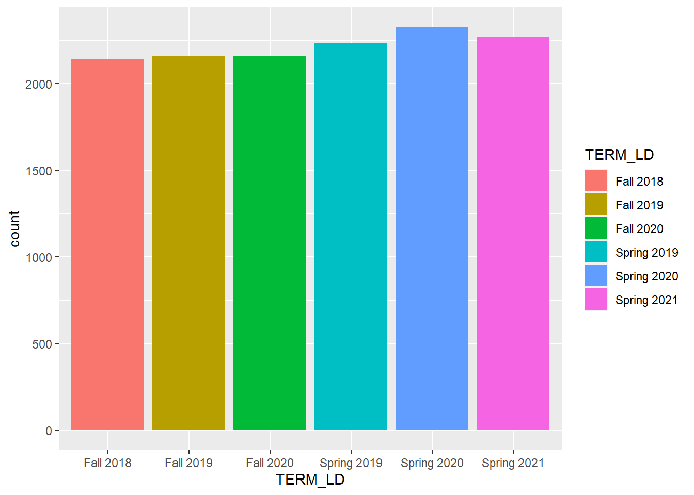
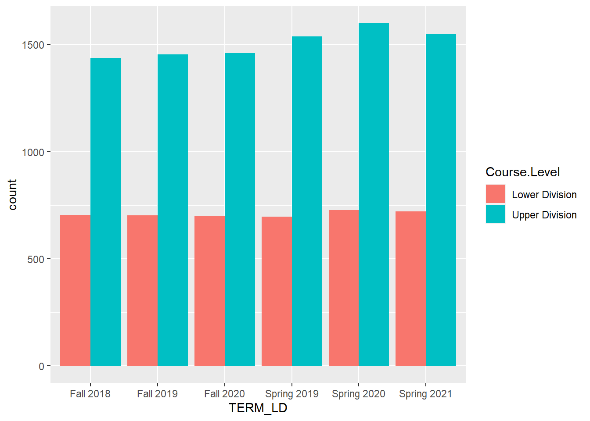
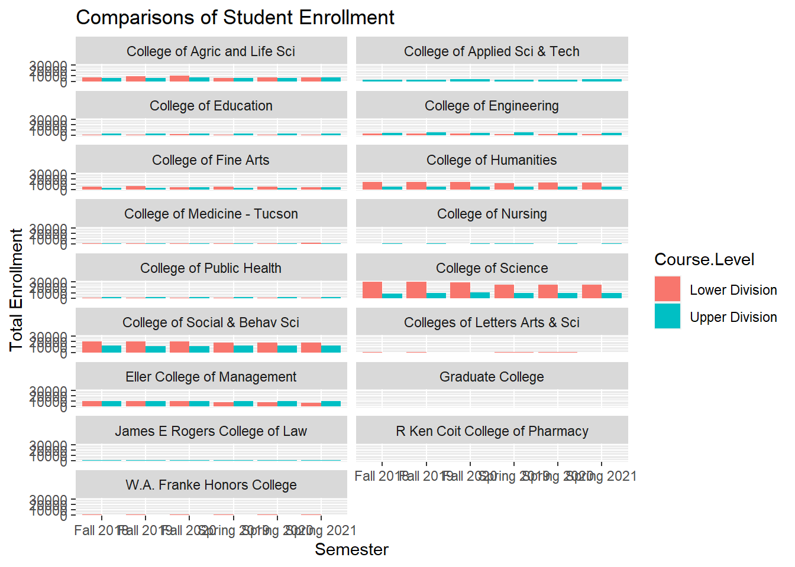

suppressWarnings(library(tidyverse))
library(knitr)
library(lubridate)Dataset Setup
# set working directory
setwd("~/R/project-final-The-Null-Wranglers")
# read in data
dew_data <- read.csv("data/DEW Rates.csv")
summary(dew_data) College Department Subject.Code Catalog.Number
Length:35697 Length:35697 Length:35697 Length:35697
Class :character Class :character Class :character Class :character
Mode :character Mode :character Mode :character Mode :character
Course.Description Course.Level Total.Student.Count D_GRADE_COUNT
Length:35697 Length:35697 Length:35697 Min. : 0.000
Class :character Class :character Class :character 1st Qu.: 0.000
Mode :character Mode :character Mode :character Median : 0.000
Mean : 1.067
3rd Qu.: 0.000
Max. :291.000
FAIL_GRADE_COUNT WITHDRAW_GRADE_COUNT DEW_COUNT PASS_GRADE_COUNT
Min. : 0.00 Min. : 0.000 Min. : 0.000 Min. : 0.00
1st Qu.: 0.00 1st Qu.: 0.000 1st Qu.: 0.000 1st Qu.: 4.00
Median : 0.00 Median : 0.000 Median : 0.000 Median : 11.00
Mean : 1.55 Mean : 1.206 Mean : 3.822 Mean : 31.44
3rd Qu.: 1.00 3rd Qu.: 1.000 3rd Qu.: 2.000 3rd Qu.: 29.00
Max. :409.00 Max. :258.000 Max. :758.000 Max. :4344.00
WITHDRAW_FULLMED_GRADE_COUNT INCOMPLETE_UNGRADED_COUNT TERM_LD
Min. : 0.00 Min. : 0.00000 Length:35697
1st Qu.: 0.00 1st Qu.: 0.00000 Class :character
Median : 0.00 Median : 0.00000 Mode :character
Mean : 0.46 Mean : 0.02961
3rd Qu.: 0.00 3rd Qu.: 0.00000
Max. :143.00 Max. :95.00000
ACAD_YR_SID Percent.D.Grade Percent.E.Grade Percent.W.Grade
Min. :2019 Min. : 0.000 Min. : 0.000 Min. : 0.000
1st Qu.:2019 1st Qu.: 0.000 1st Qu.: 0.000 1st Qu.: 0.000
Median :2020 Median : 0.000 Median : 0.000 Median : 0.000
Mean :2020 Mean : 1.368 Mean : 2.623 Mean : 2.702
3rd Qu.:2021 3rd Qu.: 0.000 3rd Qu.: 2.100 3rd Qu.: 2.300
Max. :2021 Max. :100.000 Max. :100.000 Max. :100.000
Percent.DEW Percent.Passed Per.Full..Medical.Withdrawal
Min. : 0.000 Min. : 0.00 Min. : 0.000
1st Qu.: 0.000 1st Qu.: 88.20 1st Qu.: 0.000
Median : 0.000 Median :100.00 Median : 0.000
Mean : 6.693 Mean : 92.19 Mean : 0.905
3rd Qu.: 10.000 3rd Qu.:100.00 3rd Qu.: 0.000
Max. :100.000 Max. :100.00 Max. :100.000
Per.Ungraded..Incomplete
Min. : 0.000
1st Qu.: 0.000
Median : 0.000
Mean : 0.218
3rd Qu.: 0.000
Max. :100.000 Data Cleaning
# the total student count is currently a char - convert to an int
# remove commas then convert
dew_data$Total.Student.Count <- as.integer(gsub(",", "", dew_data$Total.Student.Count))# remove courses that have a incomplete that is greater than 50%
dew_data <- dew_data %>% filter(Per.Ungraded..Incomplete < 50)# Remove winter semester
dew_data <- dew_data %>%
filter(TERM_LD != "Winter 2020", TERM_LD != "Winter 2018", TERM_LD != "Winter 2019")# remove courses that have less than 5 students
dew_data <- dew_data %>%
filter(Total.Student.Count > 5)# remove all graduate level courses as we will only consider undergraduate course
dew_data <- dew_data %>%
filter(Course.Level != "Graduate")# remove summer courses
dew_data <- dew_data %>% filter(TERM_LD != "Summer 2021", TERM_LD != "Summer 2020", TERM_LD != "Summer 2019")# remove courses that are independent study/directed research style courses
dew_data <- dew_data %>% filter(Course.Description != "Internship",
Course.Description != "Directed Research",
Course.Description != "Independent Study",
Course.Description != "Senior Capstone",
Course.Description != "Honors Thesis",
Course.Description != "Special Topics",
Course.Description != "Practicum",
Course.Description != "Honors Independent Study",
Course.Description != "Honors Colloquium",
Course.Description != "Senior Mentoring Workshop",
Course.Description != "Preceptorship",
Course.Description != "Honors Preceptorship",
Course.Description != "Honors Directed Research")# inspect data
summary(dew_data) College Department Subject.Code Catalog.Number
Length:13283 Length:13283 Length:13283 Length:13283
Class :character Class :character Class :character Class :character
Mode :character Mode :character Mode :character Mode :character
Course.Description Course.Level Total.Student.Count D_GRADE_COUNT
Length:13283 Length:13283 Min. : 6.00 Min. : 0.000
Class :character Class :character 1st Qu.: 16.00 1st Qu.: 0.000
Mode :character Mode :character Median : 31.00 Median : 0.000
Mean : 71.31 Mean : 2.605
3rd Qu.: 66.00 3rd Qu.: 2.000
Max. :4817.00 Max. :291.000
FAIL_GRADE_COUNT WITHDRAW_GRADE_COUNT DEW_COUNT PASS_GRADE_COUNT
Min. : 0.000 Min. : 0.000 Min. : 0.00 Min. : 1.00
1st Qu.: 0.000 1st Qu.: 0.000 1st Qu.: 1.00 1st Qu.: 14.00
Median : 1.000 Median : 1.000 Median : 2.00 Median : 28.00
Mean : 3.709 Mean : 2.747 Mean : 9.06 Mean : 61.07
3rd Qu.: 3.000 3rd Qu.: 2.000 3rd Qu.: 7.00 3rd Qu.: 57.00
Max. :409.000 Max. :258.000 Max. :758.00 Max. :4344.00
WITHDRAW_FULLMED_GRADE_COUNT INCOMPLETE_UNGRADED_COUNT TERM_LD
Min. : 0.000 Min. : 0.00000 Length:13283
1st Qu.: 0.000 1st Qu.: 0.00000 Class :character
Median : 0.000 Median : 0.00000 Mode :character
Mean : 1.158 Mean : 0.02417
3rd Qu.: 1.000 3rd Qu.: 0.00000
Max. :143.000 Max. :18.00000
ACAD_YR_SID Percent.D.Grade Percent.E.Grade Percent.W.Grade
Min. :2019 Min. : 0.000 Min. : 0.000 Min. : 0.000
1st Qu.:2019 1st Qu.: 0.000 1st Qu.: 0.000 1st Qu.: 0.000
Median :2020 Median : 0.000 Median : 1.800 Median : 1.500
Mean :2020 Mean : 2.595 Mean : 4.143 Mean : 3.781
3rd Qu.:2021 3rd Qu.: 4.000 3rd Qu.: 6.700 3rd Qu.: 5.600
Max. :2021 Max. :55.600 Max. :71.400 Max. :63.600
Percent.DEW Percent.Passed Per.Full..Medical.Withdrawal
Min. : 0.00 Min. : 14.30 Min. : 0.000
1st Qu.: 1.10 1st Qu.: 81.90 1st Qu.: 0.000
Median : 7.90 Median : 90.50 Median : 0.000
Mean :10.52 Mean : 87.89 Mean : 1.516
3rd Qu.:15.80 3rd Qu.: 97.10 3rd Qu.: 2.100
Max. :85.70 Max. :100.00 Max. :33.300
Per.Ungraded..Incomplete
Min. : 0.00000
1st Qu.: 0.00000
Median : 0.00000
Mean : 0.07805
3rd Qu.: 0.00000
Max. :28.60000 Should we remove some of these columns?
Plots
# total number of courses per semester?
dew_data %>%
group_by(TERM_LD) %>%
ggplot(aes( x = TERM_LD,
fill = TERM_LD))+
geom_bar(position = "dodge")
# courses by level
dew_data %>%
group_by(TERM_LD, Course.Level) %>%
ggplot(aes( x = TERM_LD,
fill = Course.Level))+
geom_bar(position = "dodge")
We need to explain why there is so many more upper division courses
#1 plot of enrollment grouped by division for each semester - Rohit#2 mean and median of each semester - Rohit#3 mean enrollment for course level by semester - Anjani#4 facet wrap of colleges of upper and lower per semester by enrollment - Kristi
# courses by sections - some classes are offered more than once per semester could help explain the above results in course level
dew_data %>%
group_by(TERM_LD, Course.Level, College) %>%
summarise(total_enrolled = sum(Total.Student.Count)) %>%
ggplot(aes( x = TERM_LD,
y = total_enrolled,
fill = Course.Level))+
geom_col(position = "dodge")+
facet_wrap(~College, ncol=2)+
labs(title = "Comparisons of Student Enrollment",
x = "Semester",
y = "Total Enrollment")`summarise()` has grouped output by 'TERM_LD', 'Course.Level'. You can override
using the `.groups` argument.
#5 facet wrap of colleges of mean enrollment per semester <- Utkarsha#6 facet wrap of departments in top enrollemnt college of upper and lower per semester <- Dong